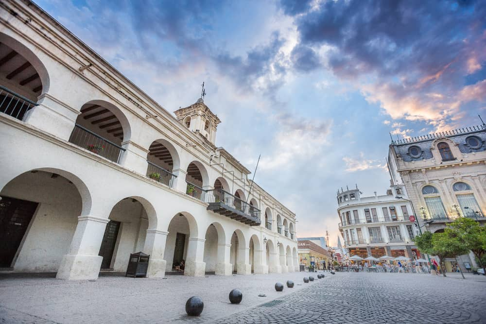
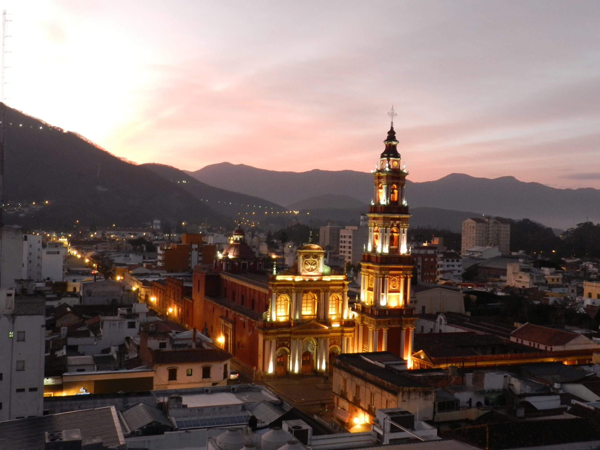

Ubicado en la ciudad de Salta, el Teleférico San Bernardo es una de las principales atracciones turísticas de la región. Este sistema de transporte ofrece un recorrido panorámico que conecta el Parque San Martín con la cima del Cerro San Bernardo, permitiendo a los visitantes disfrutar de una vista inigualable de la ciudad y sus alrededores.
El viaje en teleférico dura aproximadamente 10 minutos y permite admirar la belleza del Valle de Lerma, con sus montañas y paisajes naturales. Al llegar a la cima, los turistas pueden recorrer senderos, visitar miradores estratégicos y relajarse en espacios verdes. También hay una cascada artificial y una zona con puestos de artesanías y gastronomía local.
El MAAM es uno de los espacios culturales más importantes de Sudamérica. Este museo alberga una de las colecciones arqueológicas más impactantes del mundo, destacándose por la exhibición de los Niños del Llullaillaco, tres momias incas excepcionalmente conservadas, descubiertas a más de 6.700 metros de altura en la cumbre del volcán Llullaillaco.
El museo frece a sus visitantes una experiencia única para comprender la riqueza y profundidad de la cultura inca en los Andes.
A través de sus salas interactivas, el museo exhibe piezas textiles, cerámicas y artefactos que acompañaban a los niños en su ofrenda ceremonial hace más de 500 años.
● Ubicación: Mitre 77, Salta, Argentina
● Horarios: Martes a domingo de 11:00 a 19:00 hs
● Entradas: General y descuentos especiales para estudiantes y jubilados
El Tren a las Nubes es una de las experiencias ferroviarias más impresionantes del mundo y uno de los principales atractivos turísticos de Salta, Argentina. Este icónico recorrido lleva a los viajeros a través de paisajes majestuosos de la Quebrada del Toro, ascendiendo hasta los 4.220 metros sobre el nivel del mar en el famoso Viaducto La Polvorilla, una de las obras de ingeniería más impresionantes de América Latina.
Detalles del recorrido:
● Salida desde: Ciudad de Salta (bus hasta San Antonio de los Cobres, luego tren hasta el Viaducto La Polvorilla)
● Duración total: Aproximadamente 12 horas
● Entradas: Disponibles con reserva anticipada
Cafayate, ubicado a 189 km de la ciudad de Salta, es conocido por su producción de vinos de altura, especialmente el emblemático Torrontés, este pueblo combina paisajes imponentes, cultura andina y una gastronomía exquisita.
Qué hacer en Cafayate:
● Recorrido por bodegas - Cafayate es la cuna del vino Torrontés, una variedad blanca y aromática única en el mundo. Se pueden visitar bodegas tradicionales y modernas, degustar vinos de altura y conocer el proceso de producción.
● Quebrada de las Conchas - Uno de los atractivos naturales más impresionantes de la región. A lo largo de la Ruta 68, se pueden admirar formaciones rocosas como la Garganta del Diablo, el Anfiteatro y los Castillos, esculpidas por el viento y el agua a lo largo de millones de años.
● Museo de la Vid y el Vino - Un espacio interactivo que permite conocer la historia y la importancia de la vitivinicultura en la región.
● Ciclismo y trekking - Cafayate ofrece múltiples senderos para explorar en bicicleta o a pie, atravesando viñedos, quebradas y cerros con vistas panorámicas impresionantes.
“Viajar es vivir.” - Hans Christian Andersen
“El mundo es un libro y aquellos que no viajan solo leen una página.” - San Agustín
"Un viaje se mide mejor en amigos que en millas." - Tim Cahill
“No viajamos para escapar de la vida, sino para que la vida no se nos escape.”